Simple Close Loop Temperature Control
Updated 03-28-2026
Summary
An experimental heater/thermistor setup was used to explore reasonable bounds of closed loop co-located temperature control with low cost hardware and simple control algorithms. Analysis, data processing was done in open-source/free tools like Python (i.e. no MATLAB) to show performance of 2 controller algorithms, PI and PI+Smith Predictor.
Using PI + Smith Predictor control algorithm, a -3dB closed loop bandwidth of 0.318Hz is achieved. With PI algorithm, BW 0.114Hz is achieved. In time domain jitter, the control reduces pk2pk temperature variation by a factor of 6.5x compared to an ambient thermistor. The pk2pk temperature at the feedback thermistor is ~0.05degC.
I learned about smith predictator from an old Kollmorgen paper that used it in a current feedback loop for a servo amplifier
https://doi.org/10.23919/EPE17ECCEEUROPE.2017.8099312
Potential applications are
- Temperature stabilization of optical, stage, etc... structures on semiconductor captital equipment or precision machine tools
- Temperature stabilization of ultra-precision encoder heads (drift ~1-100nm/degC depending on optical design/materials)
- Temperature stabilization of voice coil motors used in force-control application. Supress Kf variation from NdFeB 0.12%Br/degC
Experiment Setup
A kapton resistive heater is taped onto the outside wall of an aluminum rice-cooker pot (mass 165g). A one thermistor is kapton taped to the inside wall. A second thermistor on the breadboard is used to measure the ambient temperature. The setup sits in still, indoor air not exposed to much sunlight.
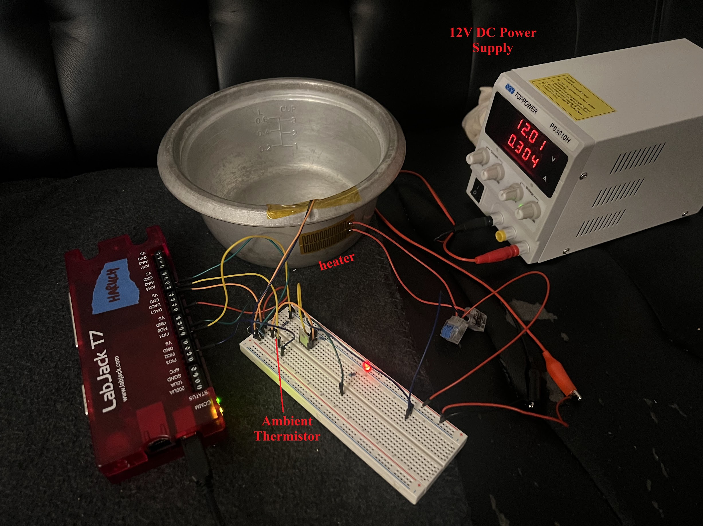
Heater PWM, Thermistor, DAQ Circuits
A 30V/10A DC power supply is used to power the resistor in CV mode at 12V. A "logic level" MOSFET switches the load at a PWM frequency and duty cycle prescribed FIO0 pin on Labjack T7 DAQ box. A PWM frequency of 5Hz was used which is very slow but performs well and gives good duty cycle resolution of 0.0016% (later you will see 5Hz PWM is ~50x the bandwidth).
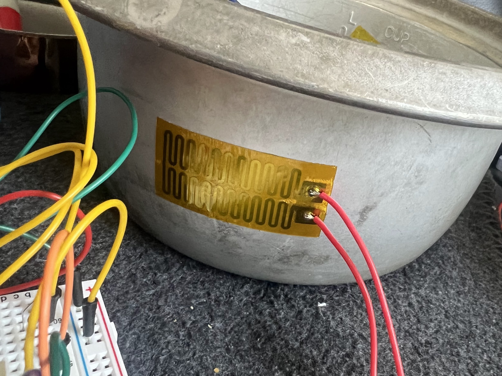
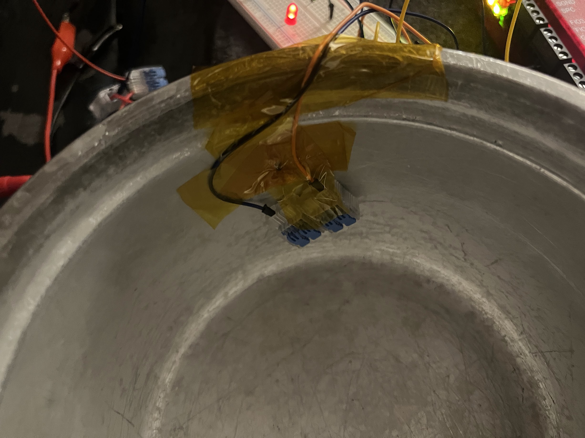
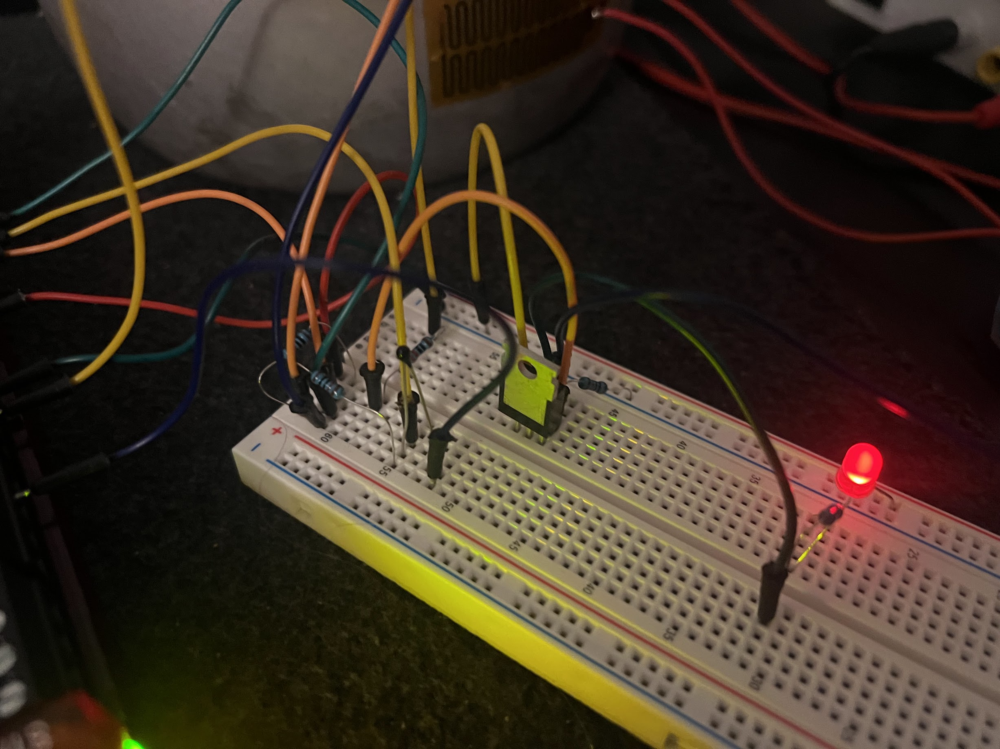
A red LED is used as visual indicator of heating
The 10k NTC thermistors are provided 1.8VDC from a Labjack DAC0 pin. 10k resistors are used to form a voltage divider. An actual voltage reference and high precision, low TCR resistors would be prefered but the Labjack is not too bad and I don't care about accuracy in this case. The Labjack 16bit analog inputs are used along with Steinhart-Hart equation to measure temperature with noise-free resolution order of magnitude ~0.005degC.
The Labjack could be replaced with a small microcontroller or analog circuits in a "production-ready" design.
System Identification / Bodes
I prefer to design controller filters via loop shaping, so it is helpful to have a plant bode of the system
At 30C setpoint, I injected a sine-sweep/chirp input from 0.0005Hz to 0.1Hz. The time domain plots are shown below. Gains were set too high so below ~0.2hr the feedback controller was rejecting the noise input which impacts the data quality of the DC gain. At 0.45hr there seems to be some ambient/environmental disturbance.
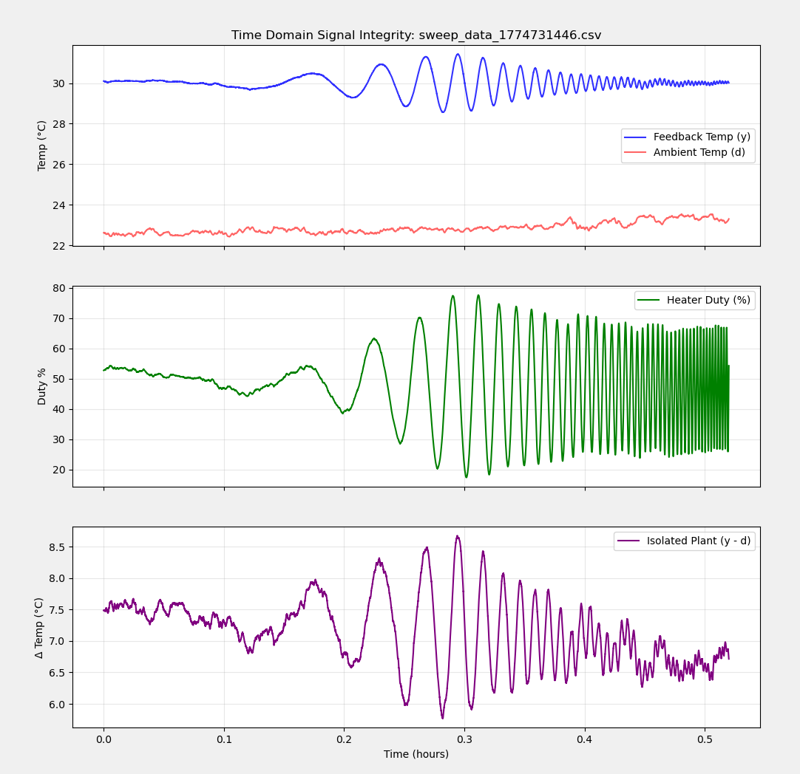
The time domain data was processed into frequency domain plant data. A first-order-plus-deadtime model (discrete at 40Hz) was chosen to model the plant which fits quite well. The fit will be used for controller design instead of the experiment data.
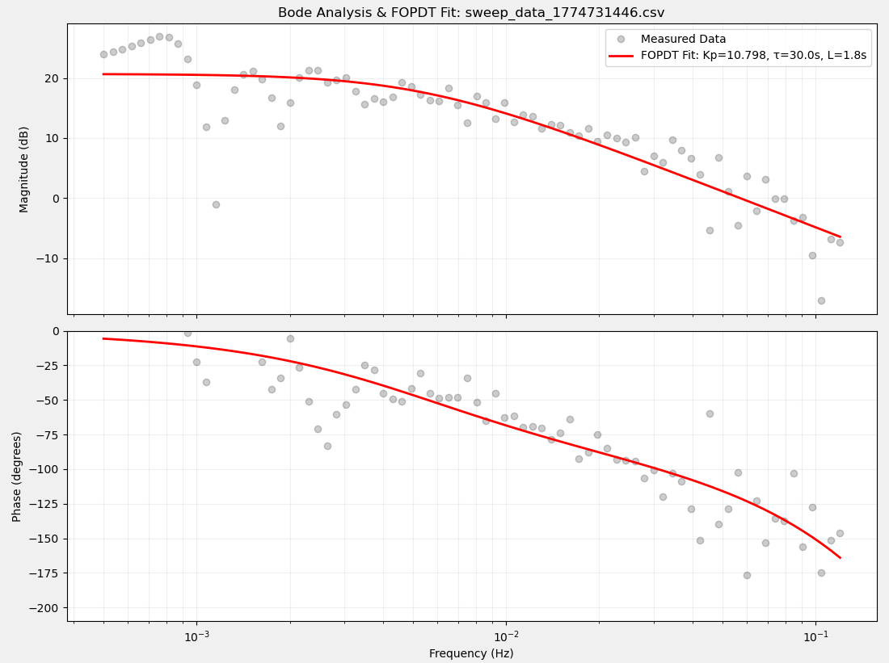
Controller Filter Tuning
The Labjack t7 and my PC implement the voltage/resistance to temperature conversion equations, PI filter algorithm, and close loop at 40Hz sampling frequency with a python code.
PI gains are selected based on the fitted plant model to give ~60deg of phase margin for good damping and a nearly straight open loop response. A lag filter could be similarly designed if desired.
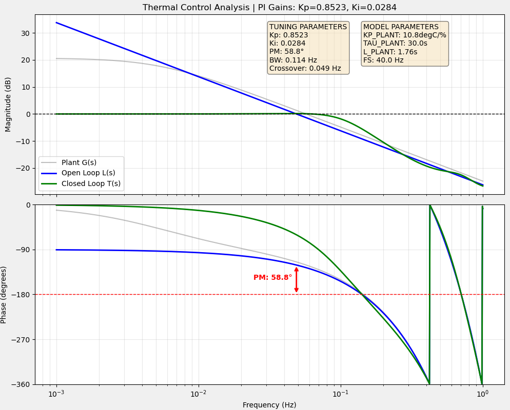
A very simple ambient temp sensor feedforward term can be set based on the known plant gain. It doesn't help performance much because the temperature in my apartment is relatively stable---one benefit of living in California
Potential for improved performance w/ Smith Predictor Algorithm
Smith Predictor algorithm is well known for improving performance on systems with delay. Using the FOPDT model parameters for the predictor allows higher gains at the same phase margin. The downside is the controller stability, performance, etc... is not robust to changes in the plant. For example, differences in thermal contact resistance or change in ambient airflow/fans. In this case it improves the bandwidth by approximately a factor of 3
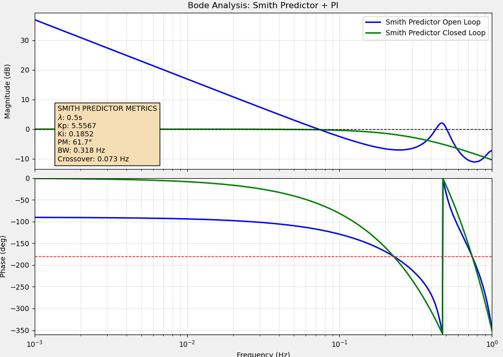
Controller Summary
| Configuration | Kp | Ki | PM (deg) | Crossover 0dB OL (Hz) | Bandwidth -3dB CL (Hz) |
| PI | 0.8523 | 0.0284 | 58.8 | 0.049 | 0.114 |
| PI+SP | 5.5567 | 0.1852 | 61.7 | 0.073 | 0.318 |
Time domain tracking, jitter, etc.. Experiment Data
Standard PI (phase margin 60deg)
Tracking a step input to the reference of 5degC agrees well with expectation of a well damped, relatively quick response even with actuator saturation (100% duty cycle up to 7.2s)
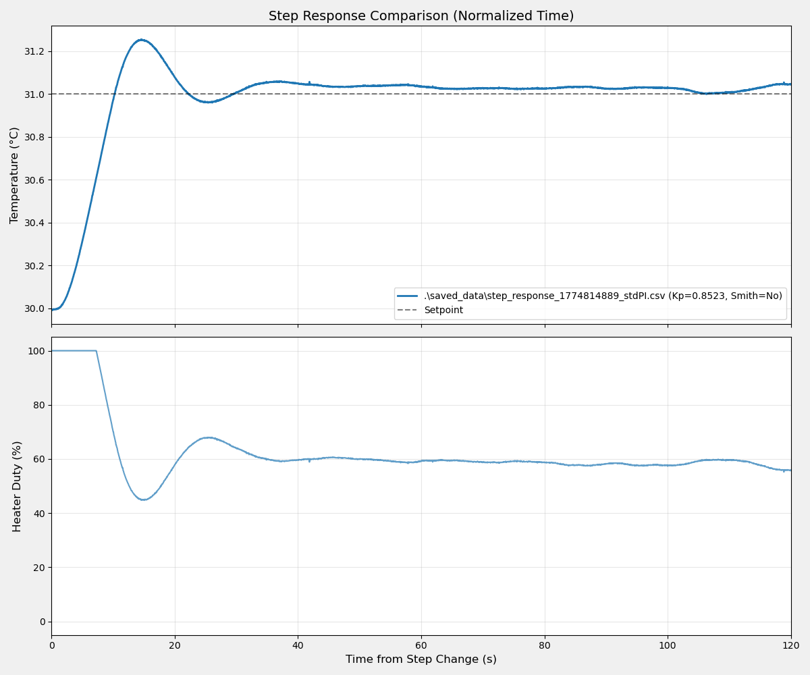
Standard PI + Smith Predictor (phase margin 60deg)
The smith predictor improves performance compared to standard PI and is stable, well damped even with actuator saturation (100% duty cycle up to 7.48s). The settling is faster and there is less overshoot/undershoot.
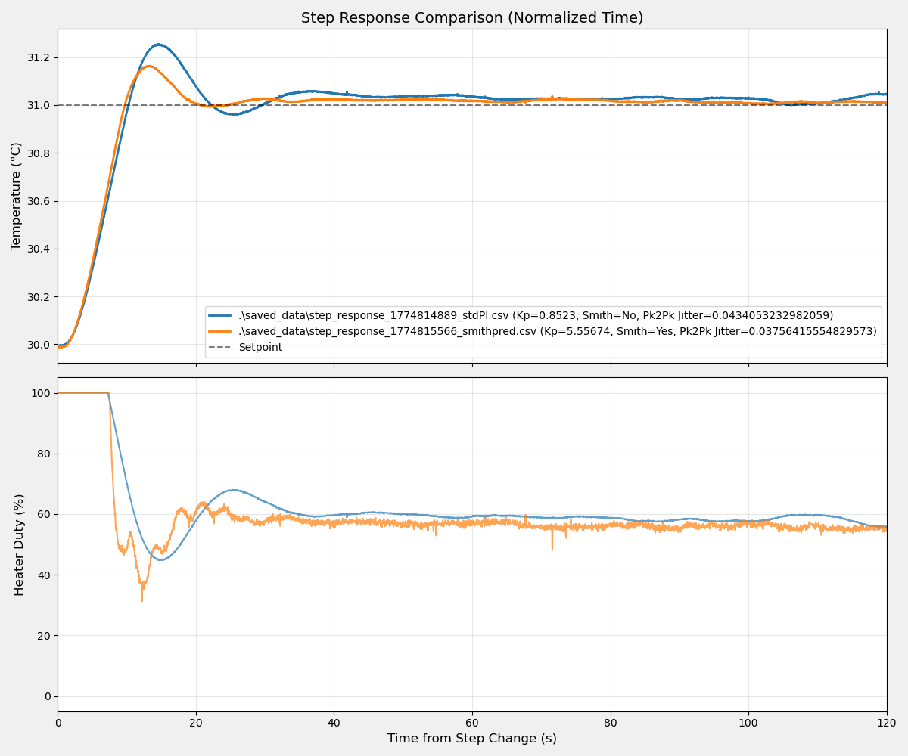
High Gains Without Smith Predictor
As expected, using the high gains without smith predictor shows oscillatory/unstable behavior
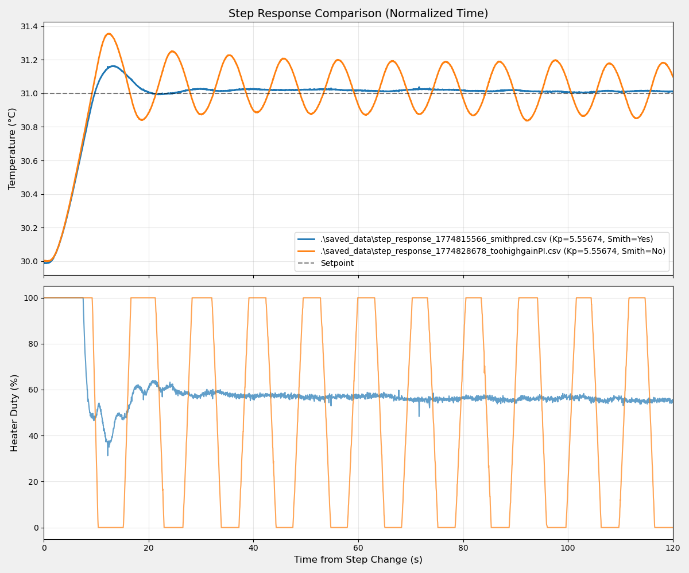
Static jitter
Over a 2.7 minute time period in still air, the jitter for PI and PI + Smith Predictor are similar and very low. The ambient air changes temperature ~0.32degC pk2pk and is reduced by factor of 6.5x to 0.049degC with the PI filter. The higher gains of the PI + smith predictor do not appear to translate to better disturbance rejection in time domain for some reason.
A 6.5X reduction in thermal drift is difficult to achieve with improvements in material if you are already using low CTE materials like Invar or Carbon Fiber Composites
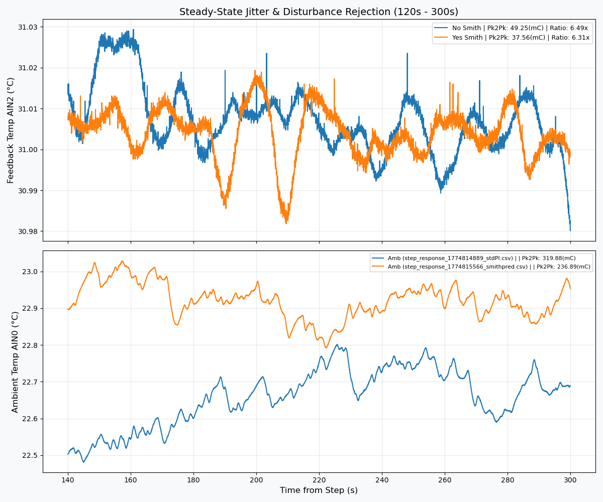
Additionally, the changes in ambient thermistor are not correlated with changes at the feedback thermistor, therefore there may be some other temperature disturbance not being captured. That is to say the controller could be performing better (or worse) than this data reflects due to chosen placement of ambient thermistor, perhaps adding 2 or 3 more ambient thermistors in different locations would help find root cause of the disturbance as there are likely drafts/airflows in my apartment.